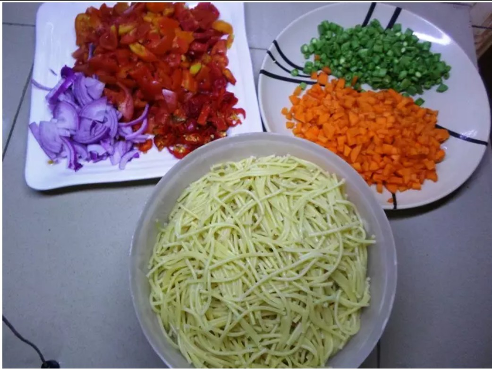
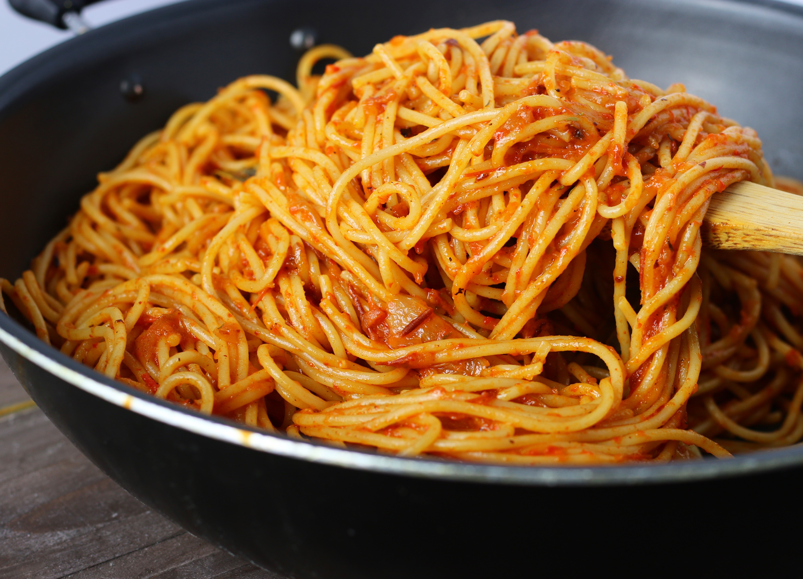
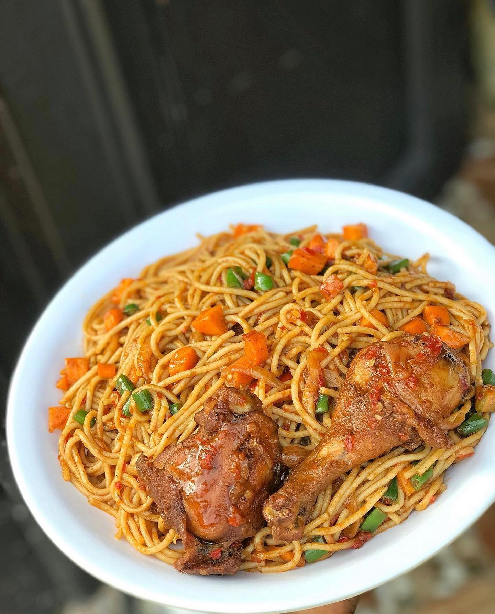

Recipe Information
Prep time: 20 minutes
Cook time: 30 minutes
Servings: 5 plates
Difficulty: Beginner
Ingredients
- 1 pack Spaghetti
- 4 tbsp Groundnut oil
- 4 Fresh peppers
- 8 large Fresh tomatoes
- 2 medium Onions
- 2 cloves Garlic
- 1 thumb-sized piece Ginger
- 1 tsp Thyme
- 1 tsp Curry powder
- 2 Bouillon cubes
- 1 tsp Seasoning powder
- Salt – to taste
- Diced carrot and green peas
Instructions
-
Step 1 - Cook the Spaghetti:
- In a pot, boil water with a pinch of salt.
- Add spaghetti and cook until just tender.
- Drain and set aside.
-
Step 2 - Prepare the Stew:
- Slice the tomatoes, peppers, and onion.
- Blend the garlic and ginger until smooth.
- Heat groundnut oil in a pot, add the sliced onion, blended ginger and garlic, thyme, and curry powder, and fry a little.
- Pour in the sliced tomatoes and pepper and fry on medium heat for about 10 minutes.

-
Step 3 - Season the Sauce:
- Add bouillon cubes, seasoning powder, and a little salt.
- Stir well and allow the sauce to fry until the water dries out and thickens, stirring occasionally.
-
Step 4 - Combine with Spaghetti:
- Add the drained spaghetti to the sauce. Add diced carrot and green peas.
- Toss and stir until the spaghetti is well coated.
- Reduce heat and let it simmer for 5 minutes to absorb the flavors.

-
Final Step - Serve:
- Serve hot with fried chicken or any protein of choice if desired.

Tips
For extra flavor, fry your garlic and ginger mix with thyme and a little curry before adding your tomato and pepper mix. This enhances both the aroma and taste.